蓝蛙冷冻牛油果泥操作指引书
1. 褐变拍照：使用水印相机拍摄，照片需清晰呈现报损数量，褐变区域、拍摄时间与地点。
2. 报废视频：不合格产品剪开包装，完整录制倒入垃圾桶的销毁过程。
3. 报损时间：门店请于每日营业结束后，及时向总部报备当日果泥氧化数量，并同步对应的照片、视频，请勿累积统一报送，便于我司尽快对接厂家完成报损。
⚠️ 拍摄要求：
① 图片需使用水印相机拍摄，须带有时间 + 定位水印
② 拍摄须体现喷码那一面，上传原图，确保喷码清晰可见（工厂会根据每袋喷码溯源）
③ 每天报损，切勿积压（避免出现跨年产品）
④ 建议当晚结束营业后统一处理：剪开当天需报损的产品，一并扔进垃圾桶并拍摄视频
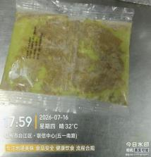
1. 果泥解冻前或解冻后：发现牛油果泥大面积褐变或有破包现象，整袋报废（如下图所示）；
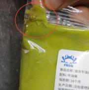
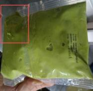
破包
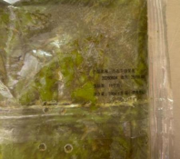
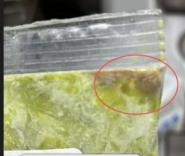
大面积褐变
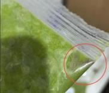
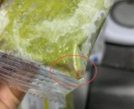
边角褐变
门店处理方法：按照报损步骤报损。
① 果泥中外源性异物：金属碎屑/玻璃碎片/石子/毛发/昆虫
门店处理方法：按照报损步骤报损。
② 果泥中本源性异物：牛油果果皮/果核（如下图所示）
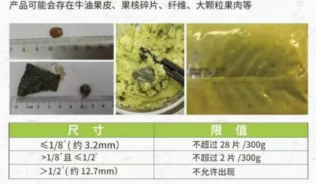
果皮果核碎片尺寸范围
处理方案：若果皮尺寸≥3.2mm且超过28片/袋，按照报损步骤报损。
1. 产品解冻：前一晚将冷冻果泥放置于冷藏存储柜进行解冻，产品放置类似冰激凌状态方可使用，或当天解冻最优，早上使用冷水流水化冻（约10分钟即可解冻）；
2. 产品中的黑色小点是牛油果果皮，属于牛油果的加工生产过程不可避免的，是正常现象，不影响产品风味，挑出果皮可正常使用。（如图1所示）
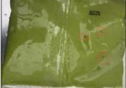
（图1）黑色小点是牛油果皮/果核
3. 解冻黄色油脂析出：水果产品自身含有水分，解冻后出现水油分离属于正常现象；析出的黄色部分是天然油脂，易误判为氧化。此情况并非褐变，若发生分离，搅拌均匀后可正常使用。
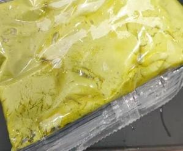
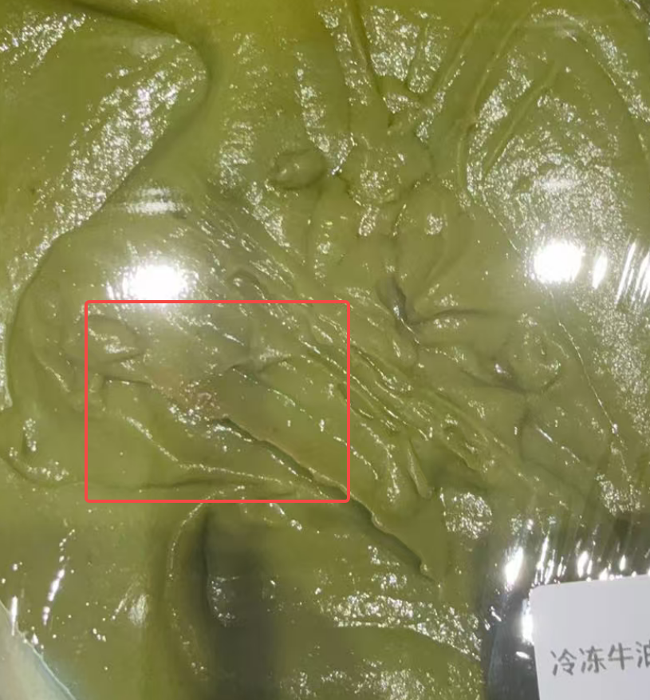
！ (1). 禁止热水或温水解冻，解冻期间不要揉搓产品，会导致油脂析出，风味发苦；
！ (2). 禁止未开封产品长期存放于冷藏中存储或解冻，这种方式让产品长期脱冷，影响产品风味；
！ (3). 禁止仓库运输及门店搬运途中暴力运输及重摔，暴力会导致产品内包碰撞破损，继而发生变质。